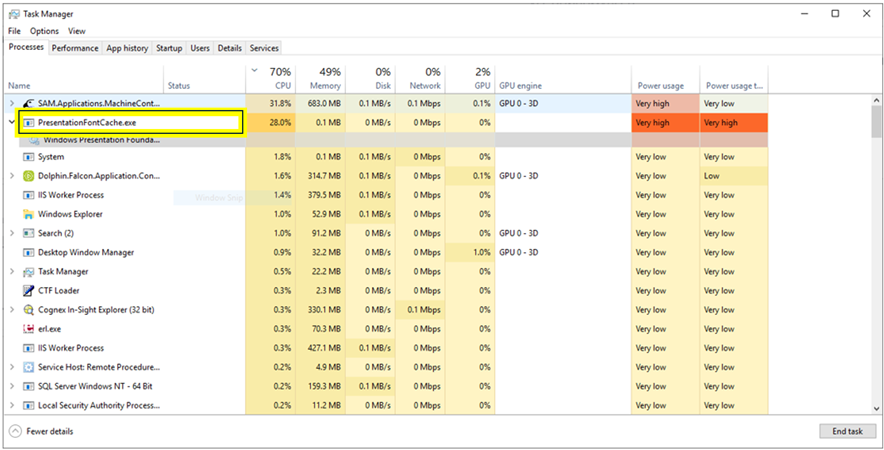
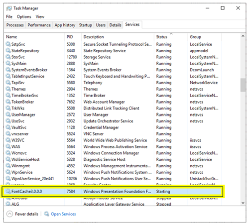

Troubleshooting High CPU Utilization by PresentationFontCache.exe
This topic includes information about how to troubleshoot an issue with high CPU utilization exhibited by the PresentationFontCache.exe process.
- Sign in to use the BeckmanAdmin account. See Signing In to Use the BeckmanAdmin Account for more information.
- Confirm the issue is high CPU utilization exhibited by the PresentationFontCache.exe process.
- On the Desktop, right-click the Taskbar and select Task Manager to open Task Manager.
- Select the CPU column to sort the CPU utilization percentages and confirm that the PresentationFontCache.exe process is exhibiting high CPU utilization.

- Select the Services tab and confirm that the FontCache3.0.0.0 service is in a Starting status.

- If the PresentationFontCache.exe process is exhibiting high CPU utilization and the FontCache3.0.0.0 service is in a Starting status:
- Open File Explorer.
- Go to
C:\Windows\ServiceProfiles\LocalService\AppData\Local\.
Note: By default the AppData folder is a hidden folder. If you do not see the AppData folder:
- Select the View tab.
- Select Details.
- Select Hidden Items.
- Delete the FontCache3.0.0.0.dat file.
- Restart the console PC. See Restarting the Console PC for more information.